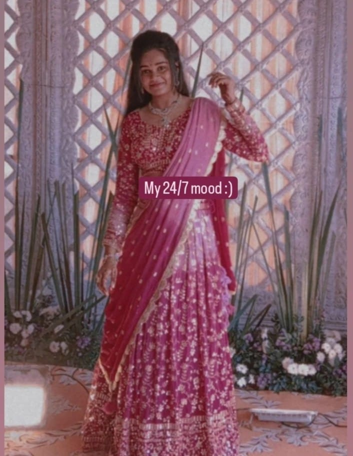
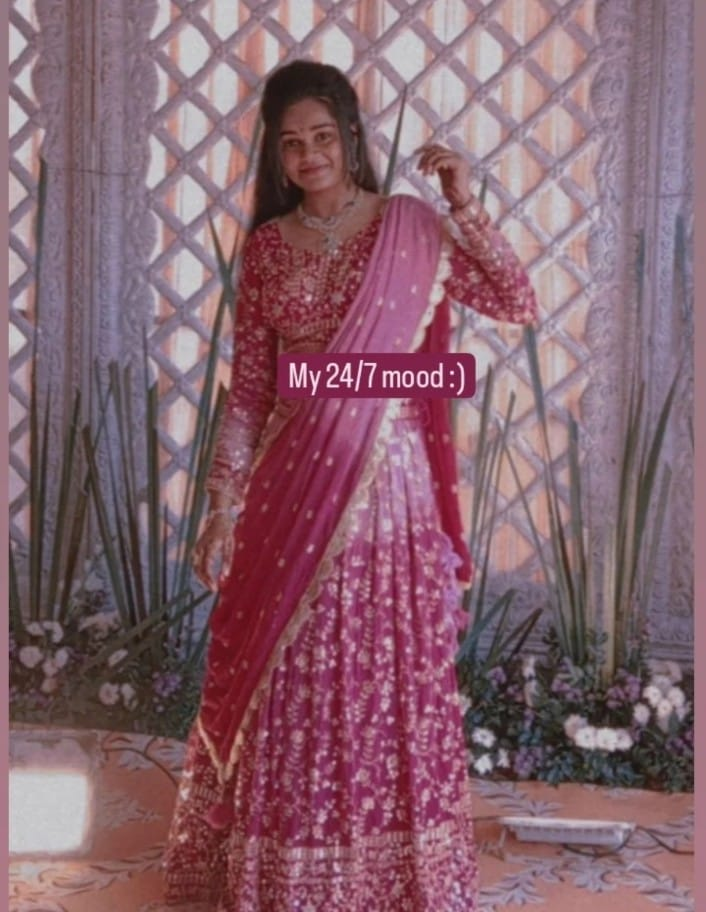

Bit About Me
After finishing my primary education from Little woods school,Andhra Pradesh, I joined in VIT-AP university in 2023. I started coding to escape academics and little did I know that I would make a career in it. As a highly motivated induvidual,I have honed my skills in various aspects like WebDev, ML and Data Science, apart from being the best competitive Programmer of my college.